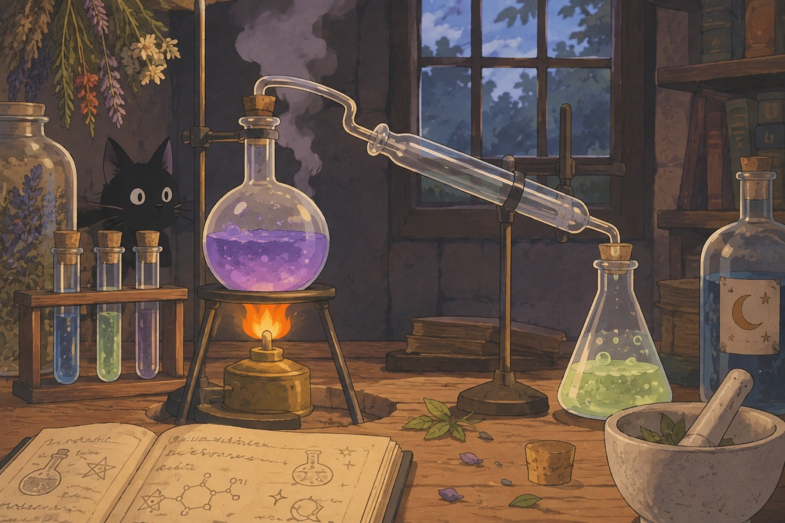
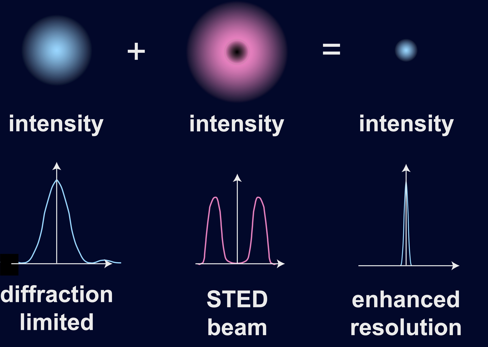
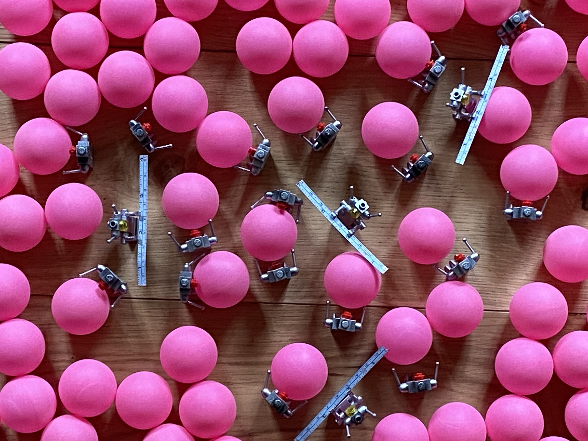

How do we address longstanding challenges?
We study how the interactions between individual constituents give rise to collective behaviour
using a multidisciplinary approach.
We choose suitable systems across a vast range of lengthscales to realise phenomena of interest.
Depending on the system this can involve synthesis of the colloids, 3d imaging with confocal
microscopy or STED ‘‘nanoscopy’’ and/or computer simulation. We analyse
the data with our bespoke topological cluster classification .
This page describes the technique of confocal microscopy and real space analysis of Colloidal
colloidal systems. This is just a part of what we do --
we also rear zebrafish and express proteins.

Synthesis
The colloidal systems we use have a degree of functionality that is impossible to buy. So we synthesise in-house which enables us to tailor suitable nano-architectures. In particular, the colloids are fluorescently labelled and refractive index-and density-matched to the solvent. Our 3d induced charge electrophoresis active colloids are furthermore functionalised with chromium or gold.

3d Imaging
Almost all materials are three-dimensional, and yet the vast majority of microscopy
technqiues image in 2d. Confocal microscopy is the only technique that enables 3d microscopy
at a rate fast enough to follow dynamics in real tine. It is therefore central to the challenges of
nucleation and the glass transition.
and the glass transition.
An exciting development is STimulated Emission via Depletion (STED)
which seemingly defies the laws of diffraction and for which its inventor, Stefan Hell,
shared the
Nobel Prize in Chemistry.
By overlaying a diffraction-limited probe beam (blue) with a doughnut-shaped depletion beam
(pink) which depletes the fluorescent molecules to their ground state so that they do not emit light,
only in the middle is fluorescent light emitted, so the probe beam is effectively sharpened.
The resolution of the STED technique is in principle unlimited.

Particle Tracking
The true power of the confocal microscopy technique is realised by tracking the coordinates of the constituent particles -- ‘‘particle resolved studies’’. The red dots in the centres of the colloidal partiiles in the plane of the face centred cubic crystal (right) are the particle coordinates.
We have recently developed machine learning method which expklciitly tackles the challenges of high-resolution confocal and STED real space analysis. Link to paper.
